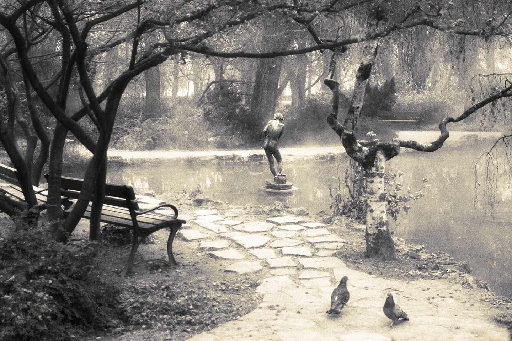
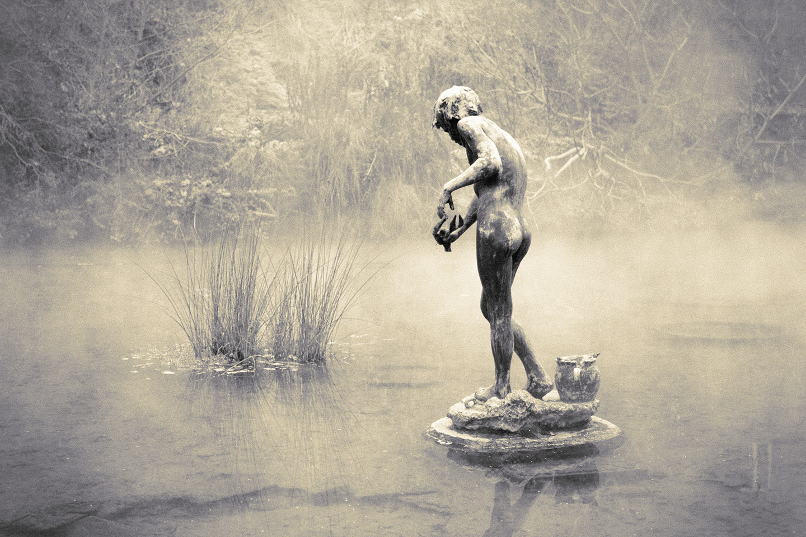
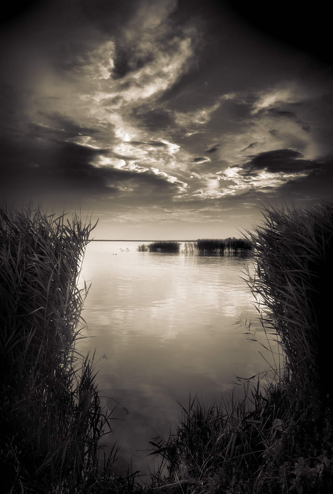
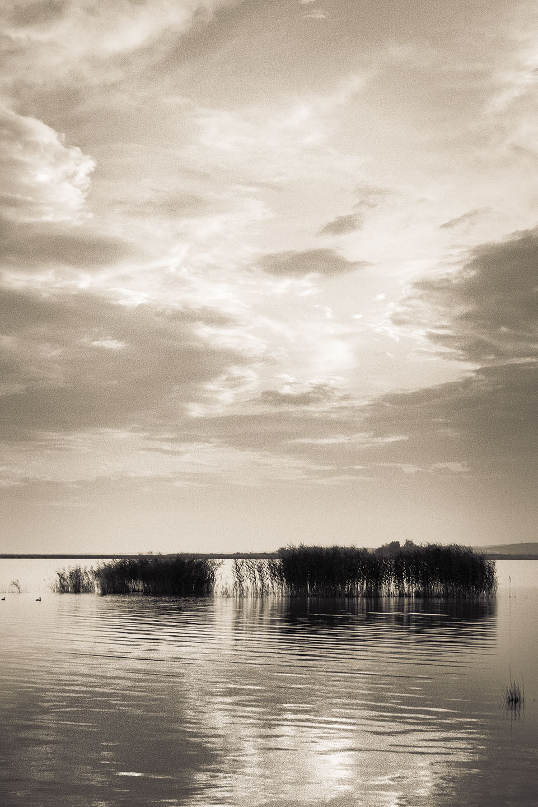
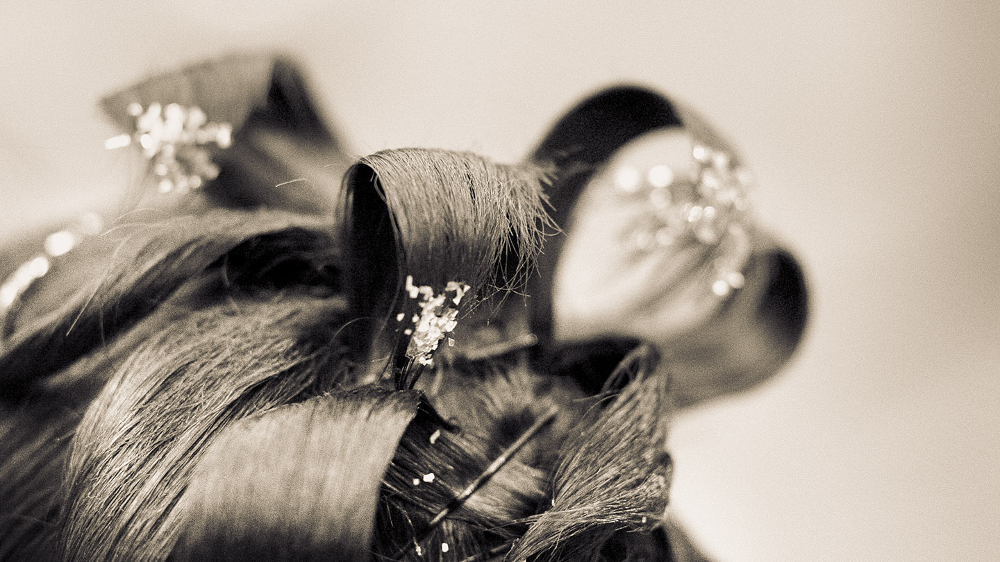

Pond and Two Pigeons — Margaret Island, Budapest, Hungary, 2005

Boy Statue — Margaret Island, Budapest, Hungary, 2005

Before Storm — Lake Velencei, Hungary, 2005

Sunset — Lake Velencei, Hungary, 2005
Candle — Budapest, Hungary, 2005

Hair — Budapest, Hungary, 2006